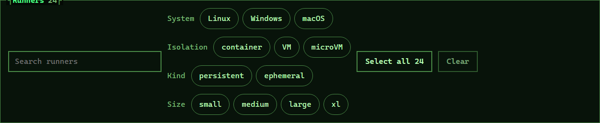
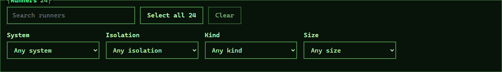
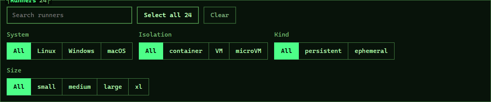
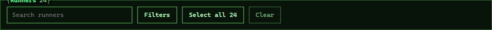
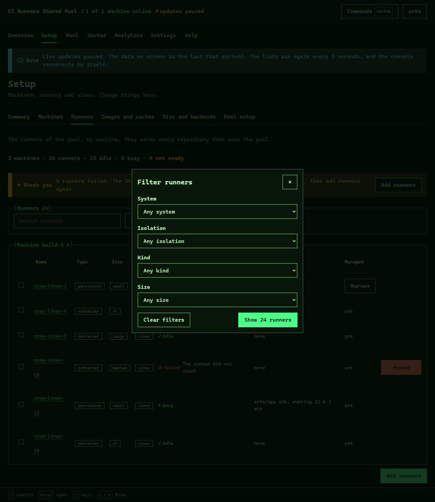

CRSP299 Runners filter bar: current and three options
Real screenshots of the real console with demo data (24 runners, 3 machines, all kinds, sizes and systems). Dark theme. Each shows the bar alone, then the whole page, at 1300 and 393 px.
Bars at 1300 px
Current

Four chip rows, cut off by the pane; search and Select all sit off to the side.
Option 1: Drop-downs

Search and selection on one line, four drop-downs in one row below (SelectField in FieldGrid; UX-22, UX-7, CORE-1, CORE-4).
Option 2: Joined choices

Each filter as joined buttons with All first (Segmented, component 12; UX-8, CORE-2). Every answer visible, no chips.
Option 3: Filter sheet

Search, one Filters button, Select all. Choices open in a sheet ending in Show N runners (component 11, UX-35).
Option 3 sheet

The sheet; active filters then show as tags with Clear filters.